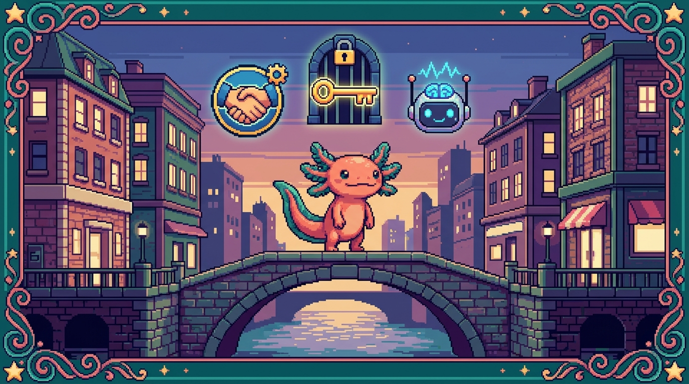

Módulo 08 — APIs, OAuth e IA

Objetivo del módulo: entender cómo las apps se comunican con otros servicios: pedir datos a una API, dejar que el usuario inicie sesión con Google/GitHub (OAuth) e integrar inteligencia artificial. Es lo que hace especiales a Faro y al chat de tu sitio.
Hasta ahora tus apps eran "islas". Aquí aprenden a hablar con el mundo: GitHub, Google Drive, OpenAI, Claude. Es el módulo que convierte una app en algo realmente poderoso.
¿De dónde sale esto en TUS proyectos?
- Faro consume la API de GitHub (tus repos), la de Google Drive (tus carpetas) y la de OpenAI (para analizar proyectos). Usa OAuth para que inicies sesión con Google y GitHub.
- tunal-digital integra la API de Claude (el chat con IA) mediante un Cloudflare Worker, con seguridad (verificación de origen, límite de uso).
¿Qué vas a poder hacer al terminar?
- Explicar qué es una API y cómo se consume (uniendo
fetchdel Módulo 03). - Entender las claves de API y cómo se guardan de forma segura.
- Comprender el flujo de OAuth (login con terceros) sin que te asuste.
- Integrar un servicio de IA y escribir un buen prompt.
- Saber cómo se construye una API propia (rutas de Next.js, Workers) y protegerla.
Capítulos
| # | Capítulo | Qué cubre |
|---|---|---|
| 01 | ¿Qué es una API? | API, REST, endpoints, contrato entre programas |
| 02 | Consumir una API | fetch, métodos, headers, claves de API |
| 03 | OAuth: login con terceros | El flujo, tokens, Google/GitHub en Faro |
| 04 | Integrar IA | Llamar a Claude/OpenAI, prompts, el chat de tu sitio |
| 05 | Construir y proteger una API | Rutas Next.js, Workers, secretos, límites |
Se publican por tandas. Empieza por el 01.
➡️ Empieza por Capítulo 01 — ¿Qué es una API?.